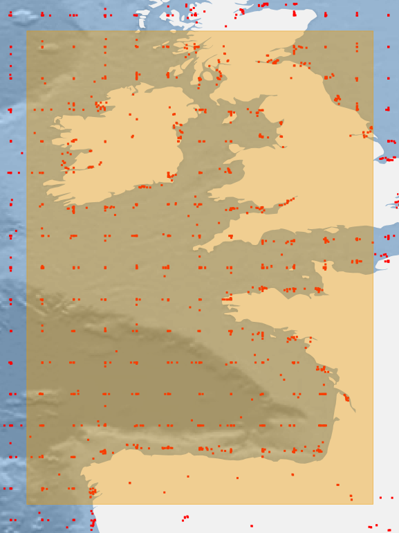

The Dataset
-The “IMOS - SRS Surface Waves Sub-Facility - altimeter wave/wind” database contains global
wave height data gathered from altimeter-bearing satellites which have flown since 1985. The data
has been calibrated against wave height measurements from in-situ buoys.
Scope

This project pertains to the patterns of wave heights surrounding Ireland, Great Britain,
and the Bay of Biscay. As someone who spends a lot of time surfing, sailing, and spending time
on the water, the idea of knowing fact-based patterns to wave heights is desirable. Currently, many
websites exist giving short-range wave forecasts, e.g.
Met Eireann,
but large-scale, seasonal patterns are hard to find.
Use
This website can be used to get an idea of conditions for surf or sailing trips longer in advance than
current forecasts, or simply to give a better understanding of the ocean that shaped our island.
With range controls to pinpoint specific dates and years, and hover-tooltips to find exact values,
the Graphs section conveys information visually and efficiently.
As well as data from the IMOS database, user-inputted data is also available, on the Survey page.
On this page, wave height and surfability is tracked at the most popular areas in Ireland, with the option
to add custom locations of your favourite surf spots.
Finally, the Reccomendations page summarises the patterns and variation that can be seen in the dataset.
Here, advice is given for beginner, intermediate, and experienced surfers planning outings.